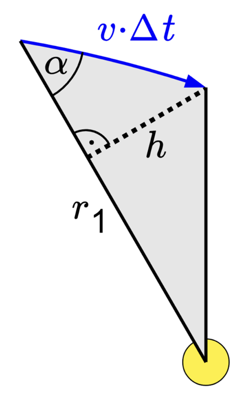
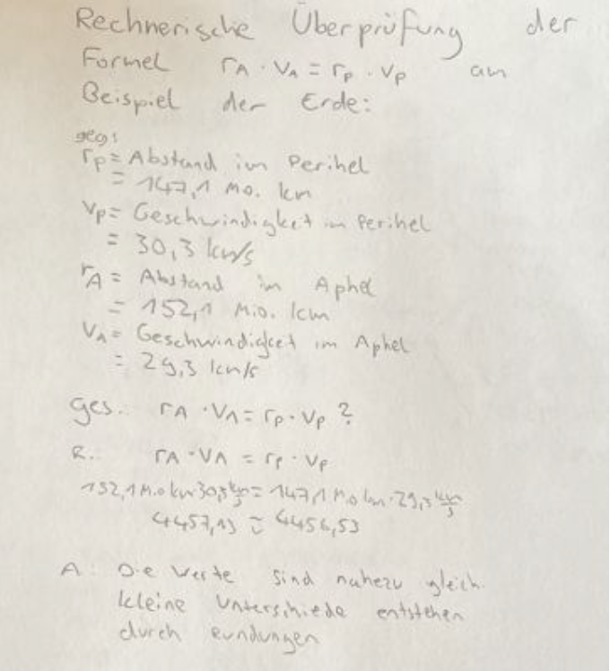

Das 2. Keplersche Gesetz
Zusammenhang zwischen Zeit und überstrichener Fläche
Leitfrage
Stellen wir uns zu Beginn die Leitfrage: "Bewegt sich ein Planet auf seiner elliptischen Umlaufbahn immer mit gleicher Geschwindigkeit um einen Stern?"
Setze dich kurz mit dieser Fragestellung auseinander.
- Stelle eine Hypothese auf.
- Begründe deine Vermutung.
- Nutze dabei die Vorstellung der elliptischen Umlaufbahn (siehe 1. Gesetz, falls benötigt).
Experiment: Bewegung um ein Zentrum
Wir wollen nun allgemein untersuchen, ob Bewegungen schneller werden können, wenn sich die Masse näher an einem Zentrum bewegt.
Schau dir dazu folgendes Video an:
https://youtu.be/3TuQ-Ud6jFA
Achte dabei besonders auf folgende Fragen:
- Wann dreht sich die Person schneller?
- Wie könnte man dieses Prinzip auf Planeten übertragen?
Begriffe
Perihel: Der Punkt auf der Umlaufbahn mit dem kleinsten Abstand zum Zentralgestirn (bei Planeten die Sonne).
Aphel: Das Gegenteil des Perihel: der Punkt auf der Umlaufbahn mit dem größten Abstand zum Zentralgestirn. Auf der Umlaufbahn liegt das Aphel immer genau gegenüber vom Perihel.
Fahrstrahl: Das ist vereinfacht gesagt die gedachte Verbindungslinie zwischen Sonne und Planet. Bewegt sich der Planet auf seiner Umlaufbahn, bewegt sich deshalb auch der Fahrstrahl mit und „überstreicht“ dabei eine Fläche (wichtig für das zweite keplersche Gesetz).
Nachweis des 2. Keplerschen Gesetzes
Druck dir nun dieses Dokument aus.
Schau dir jetzt erst das Video an und bearbeite danach die Aufgaben.
-
Vergleiche die Bewegung des Planeten im
- Perihel
- Aphel
- Zeichne die Fahrstrahlen ein. Markiere anschließend die entstehenden Flächen.
-
Vergleiche die Flächen.
- Welche Flächen wirken lang und schmal?
- Welche wirken kurz und breit?
- Überlege: Wie könnten die Flächen zusammenhängen?
Festigung
Schau dir jetzt die folgende Animation an (zweimal könnte hilfreich sein).
Wenn du nicht allein arbeitest, erklärt euch jetzt gegenseitig möglichst ohne Hilfsmittel das bisher gelernte. Gehe es ansonsten einfach allein noch einmal durch.
Erklärende Animation
[4]: Animation zum zweiten keplerschen Gesetz
Das eigentliche Gesetz
Formuliere nun mit der Hilfe des Physikbuches oder Leifiphysik selbst das 2. keplersche Gesetz.
Merksatz
Der Fahrstrahl zwischen Sonne und Planet überstreicht in gleichen Zeiten gleich große Flächen.
Mathematische Überprüfung
Wie kann man das 2. Keplersche Gesetz mathematisch überprüfen?
Berechnung der überstrichenen Fläche

[7]: Berechnungen im Dreieck
Arbeitsauftrag
Übernimm aus Leifiphysik (Link weiter oben) die "Herleitung zur Berechnung der überstrichenen Fläche" und versuche, sie nachzuvollziehen. Schaue dir das folgende Erklärvideo an und versuche anschließend, das zweite keplersche Gesetz nachzuweisen.
Geschwindigkeitsverhältnis zwischen Aphel und Perihel
Übernimm die Formel für das Geschwindigkeitsverhältnis zwischen Aphel und Perihel aus Leifiphysik.
Suche dir anschließend einen Planeten, nicht die Erde, aus unserem Sonnensystem aus und recherchiere den Abstand und die Geschwindigkeit im Perihel sowie den Abstand und die Geschwindigkeit im Aphel. Überprüfe mit Hilfe dieser Werte die Formel an deinem Beispiel.
Beispielrechnung

Freiwillige Vertiefungsaufgabe
Ein Planet bewegt sich auf einer elliptischen Umlaufbahn.
Nahe am Perihel hat der Planet einen Abstand von 4 AE (Astromischen Einheiten) zum Stern, Eine Geschwindigkeit von 12km/s und der Winkel zwischen Radius- und Geschwindigkeitsvektor beträgt 90°. Nahe dem Aphel ist der Winkel identisch und der Abstand zwischen Planet und Stern beträgt 8 AE. Berechne die Geschwindigkeit des Planeten am Aphel.
Gut gemacht!
Das war der erste Teil. Nimm dir gern eine kleine Pause, bevor du oben in der Leiste mit dem dritten keplerschen Gesetz weiter machst.